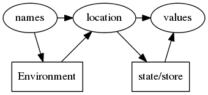
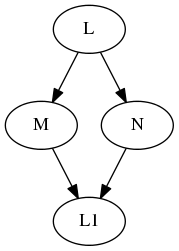

The Essential of Programming language
Table of Contents
Preface
Perhaps the whole distinction between program and programming language is a misleading idea, and future programmers will see themselves not as writing programs in particular, but as creating new languages for each new application.
1. Inductive Sets and Data
1.1
top-down definition
自顶向下意味着从宏观的角度向微观细分 A Scheme list is a list of integers if and only if either
- it is the empty list, or
- it is a pair whose car is an integer and whose cdr is a list of integers.
bottom-up definition
自底向上意味着从微观的角度向宏观归纳 The set List-of-Int is the smallest set of Scheme lists satisfying the following two properties:
- () ∈ List-of-Int, and
- if n ∈ Int and l ∈ List-of-Int, then (n . l) ∈ List-of-Int.
rules of inference
1.2
用语法规则定义集合
可以缩写为:
\begin{equation} List-of-Int ::= () | (Int . List-of-Int) \end{equation}The Smaller-Subproblem Principle
If we can reduce a problem to a smaller subproblem, we can call the procedure that solves the problem to solve the subproblem.
nth-element
(define nth-element (lambda (lst n) (if (null? lst) (report-list-too-short n) (if (zero？n) (car lst) (nth-element (cdr lst) (- n 1)))))) (define report-list-too-short (lambda (n) (eopl:error ’nth-element "List too short by ~s elements.~%" (+ n 1))))
remove-first
(define remove-first (lambda (s los) (if (null? los) '() (if (eqv? s (car los)) (cdr los) (cons (car los) (remove-first s (cdr los)))))))
occurs-free?
subst
(define subst (lambda (new old slist) ()))
Follow the Grammar!
When defining a procedure that operates on inductively defined data, the structure of the program should be patterned after the structure of the data.
更准确的说:
- Write one procedure for each nonterminal in the grammar. The procedure will be responsible for handling the data corresponding to that nonterminal, and nothing else.
- In each procedure, write one alternative for each production correspond- ing to that nonterminal. You may need additional case structure, but this will get you started. For each nonterminal that appears in the right-hand side, write a recursive call to the procedure for that nonterminal.
2 Data Abstraction
\(\lceil v \rceil\) 代表数据 v 的实现
2.3 Interfaces for Recursive Data Types
Designing an interface for a recursive data type:
- Include one constructor for each kind of data in the data type.
- Include one predicate for each kind of data in the data type.
- Include one extractor for each piece of data passed to a constructor of the data type.
举个例子, 比如lambda calculus的语法定义是这样:
\begin{align} Lc-exp &::= Identifier \\ &::= (lambda \ (Identifier) \ Lc-exp) \\ &::= (Lc-exp \ Lc-exp) \end{align}我们来定义它的interface(注意是接口,不是实现).
- Constructor
- var-exp : Var → Lc-exp
- lambda-exp : Var × Lc-exp → Lc-exp
- app-exp : Lc-exp × Lc-exp → Lc-exp
- Predicates
- var-exp? : Lc-exp → Bool
- lambda-exp? : Lc-exp → Bool
- app-exp? : Lc-exp → Bool
- Extractors
- var-exp->var :Lc-exp → Var
- lambda-exp->bound-var :Lc-exp → Var
- lambda-exp->body :Lc-exp → Lc-exp
- app-exp->rator :Lc-exp → Lc-exp
- app-exp->rand :Lc-exp → Lc-exp
2.4 A Tool for Defining Recursive Data Types
使用define-datatype来自动的定义一个递归数据类型(接口),以lambda calculus的 语法定义为例子
(define-datatype lc-exp lc-exp? (var-exp (var identifier?)) (lambda-exp (bound-var identifier?) (body lc-exp?)) (app-exp (rator lc-exp?) (rand lc-exp?)))
上面声明了3个constructor: var-exp, lambda-exp, app-exp以及一个 predicate:Lc-exp?.然后可以使用cases来使用上述定义:
(define occurs-free? (lambda (search-var exp) (cases lc-exp exp (var-exp (var) (eqv? var search-var)) (lambda-exp (bound-var body) (and (not (eqv? search-var bound-var)) (occurs-free? search-var body))) (app-exp (rator rand) (or (occurs-free? search-var rator) (occurs-free? search-var rand))))))
使用cases可以匹配出一个lc-exp的类型,它到底是var-exp, lambda-exp还是app-exp, 根据不同的情况你可以分支处理,很像一个模式匹配的过程
3 Expressions
本章的目的实际就是用scheme来写一个program来解释执行EOPL中let语言的AST,其实就 是写一个解释器,只是这个解释器直接接受AST,而不是字符串
Some Concepts
- AST(aka: abstract syntax tree or just syntax tree): 抽象语法树,和Concrete syntax tree(aka parse tree)像对应,AST不包含一些细节, 比如一个if表达式,在 AST就不会包含 if这样的关键词,因此无论你使用 if(..){..} 还是 if … then … fi, 还是其他,它们的AST都是一样的
- scanning: 根据词法规则将字符串切分为一个一个的token
- parsing: 根据语法规则将scanning生成的token生成一个AST
- expressed value: 表达式的值
- denoted value: 变量所代表的值
- 变量的声明与引用(declaration reference): lambda的形参是声明,let内的参数是 声明
- 作用域(scope): 一个变量起作用的部分就是变量的作用域
- lexical depth: 词法深度,用来表示一个变量的引用与该变量声明之间的作用域的 个数,以0为开始
- identifiers: a identifier is a string of characters,typically letters or digits,that refer to an entity,all identifiers are names,but not all names are identifiers.
- name:
4 State
返回值与副作用的区别
What’s the difference between producing a value and producing an effect? An effect is global: it is seen by the entire computation. An effect affects the entire computation (pun intended).
difference between binding and assignments
binding is local, but variable assignment is potentially global.
4.1 Computational Effects
计算机内存可以抽象为一个 Map: locations ⟶ storable values
- reference: 引用,(left value) A data structure represent location
- location: 包含reference指向的数据
- variable: One can think variable is same as location.
二者的可以这样类比:reference可以看作是url,而location可以看作是文件,文件包含 数据,而url指向该文件

4.5 Parameter Passing Variations
Natural Parameter Passing
The denoted value is same as the expressed value of the actual parameter.like the LET language
Call By Reference
The Formal Parameter is associated with the same reference of the Actual Parameter. so if you change the value of formal parameter, the value of actual parameter also changes.

Call By Value(CBV)
The denoted value is a reference to a location containning the expressed value of the actual parameter.

Call By Name(CBN)
Call By Need
5 Continuation-Passing Interpreter
Serveral Concepts
- Context: According to wikipedia, A task context is the minimal set of data used by this task at the point it has been interrupted
- Data Context: Environment is the abstraction of Data Context
- Control Context: Continuation is the abstraction of Control Contextp
lambda calculus
Terms
The set of lambda-calculus expressions can be defined with following grammar:
\begin{eqnarray*} M,N,L &=& X \\ &|& (\lambda X.M) \\ &|& (M \ M) \\ X &=& \textrm{a variable x,y ...} \\ \end{eqnarray*}Relations
- FV: a relation(function) that maps a lambda calculus expression to a set free variables. \begin{eqnarray*} FV(X) &=& \{ X \} \\ FV( (\lambda X.M) ) &=& FV(M) / \{X \} \\ FV( (M_1 M_2) ) &=& FV(M_1) \cup FV(M_2) \\ \end{eqnarray*}
- \(\_[\_ \leftarrow \_]\): a relation that maps a source expression, a variable, and an argument expression to a target expression. The target expression is the same as the source expression, except that free instances of the variable are replaced by the argument expression: \begin{eqnarray*} X_1[X_1 \leftarrow M] &=& M \\ X_2[X_1 \leftarrow M] &=& X_2 \\ (\lambda X_1.M_1)[X_1 \leftarrow M_2] &=& (\lambda X_1.M_1) \\ (\lambda X_1.M_1)[X_2 \leftarrow M_2] &=& (\lambda X_3.M_1[X_1 \leftarrow X_3][X_2 \leftarrow M_2]) \\ && where\ X_1 \neq X_2 \quad X_3 \notin FV(M_1) / \{X_1\} \quad X_3 \notin FV(M_2) \\ (M_1 M_2)[X \leftarrow M_3] &=& (M_1[X \leftarrow M_3] M_2[X \leftarrow M_3])\\ \end{eqnarray*}
- α conversion: a relation that maps a expression to another expression with formal argument changed.
- β reduction: the main reduction relation, encoding function application
- η equivalence \begin{eqnarray*} (\lambda X. M) &\alpha& (\lambda Y.M[X \leftarrow Y]) &where\ Y \notin FV(M) \\ ((\lambda X.M_1) M2) &\beta& M_1[X \leftarrow M_2] & \\ (\lambda X.(M X)) &\eta& M &where\ X \notin FV(M) \\ \end{eqnarray*}
- \(n = \alpha \cup \beta \cup \eta\)
- \(\rightarrow_n^\alpha, \rightarrow_n^\beta, \rightarrow_n^\eta\) is the compatiable closure of α, β, η.
- \(\twoheadrightarrow_n^\alpha, \twoheadrightarrow_n^\beta, \twoheadrightarrow_n^\eta\) is the flexive-transitive closure of \(\rightarrow_n^\alpha, \rightarrow_n^\beta, \rightarrow_n^\eta\).
- \(=_n^\alpha, =_n^\beta, =_n^\eta\) is the symmetric closure of \(\twoheadrightarrow_n^\alpha, \twoheadrightarrow_n^\beta, \twoheadrightarrow_n^\eta\), and the equivalence closure \(\rightarrow_n^\alpha, \rightarrow_n^\beta, \rightarrow_n^\eta\).
- \(\rightarrow_n\): the compatiable closure of n.
- \(\twoheadrightarrow_n\): the reflexive-transitive closure of →n.
- =n: the symmetric closure of \(\twoheadrightarrow_n\), equivalence closure of \(\rightarrow_n\).
Normal Form
An expression is in normal form if it cann't be reduced by \(\rightarrow_n^\beta\) or \(\rightarrow_n^\eta\).
not every lambda calculus expression has a normal form. for example:
\begin{displaymath} \Omega = ((\lambda x.x \ x) (\lambda x.x \ x)) \end{displaymath}don't have normal form.
Evaluation Strategy
- full beta reduction: Any redex may be reduced at any time.
- Normal Order Strategy: The leftmoast outermost is always reduced first.This Strategy can reduce the redex in the body of a function.
- Call By Name Strategy: Like Normal Order, but allows no reduction in the body of function. Call by Need is optimizing version of Call by Name.
- Call by Value Strategy: Only Outermost redexs are reduced and where a redex is reduced only when its right hand side has already been reduced to a value.
Church Encode
boolean
lambda calculus is call by name. so ``if'' can be implemented as a function.
pair
b is true or false
number
s means successor, z means zero. ``zero'' is same with ``false''.
list
Y Combinator
假设要在lambda calculus中构造递归函数mul,那么最直观的想法就是:
\begin{displaymath} mult = \lambda n.\lambda m.if\ (iszero\ n)\ 0\ (add\ m\ (mult\ (sub1\ n)\ m)) \end{displaymath}
可是上述构造是不合法的,因为你不能在函数体引用你正在定义的函数, 所以函数体不
能有 mult:
假设我们已经构造出了mult,那么 (mkmult0 mult) 就是mult了, 可是实际上我们没有 构造出mult,所以mkmult0 仍然不能定义出mult, 同时应该看到一点: mult是mkmult0的 不动点,因此如果我们有一个算子可以求一个函数的不动点,那么就可以将这个算子应用 到 mkmult0 来得到 mult.
\begin{displaymath} mkmult1 = \lambda t.\lambda n.\lambda m.if\ (iszero\ n)\ 0\ (add\ m\ ((t\ t)\ (sub1\ n)\ m)) \end{displaymath}
(mkmult1 mkmult1)就是mult了,这就是一个定义递归函数的常用方法了,可是这个方法
比较笨拙,因为我们每一次调用必须将mkmult1应用于自身.更好的做法应该是能将自我
应用的部分提取出来,现在我们假设有一个 mk 函数
这个函数可以构造出mult: (mk mkmult0),可是 mk 的定义是递归的也犯了最开始定
义mul时同样的错误,所以我们使用 mkmult1 类似的方式来变换一下:
因此我们得到了一个很重要的性质:
\begin{displaymath} (mkmult0\ (mk\ mkmult0)) = (mk\ mkmult0) \end{displaymath}
那么 (mk mkmult0) 产生的函数就是 mkmult0 的不动点,而 mk 就是不动点算子,也
就是说将 mk 作用于一个函数就可以得到该函数的不动点, Y Combinator是一个更常
用的不动点算子:
这是一个Y combinator的推导过程(slideshare需翻墙):
Theorems
Church-Rosser for =n
if M =n N, then there exists an L such that \(M \twoheadrightarrow_n L\) and \(N \twoheadrightarrow_n L\).
Diamond Property for →→n
if \(L \twoheadrightarrow_n M\) and \(L \twoheadrightarrow_n N\) then there exists an expression L1 such that \(M \twoheadrightarrow_n L1\) and \(N \twoheadrightarrow_n L1\)

ISWIM
The difference between ISWIM and lambda calculus is that ISWIM uses Call By Value evaluation strategy and it also contains some constants and primitive operations.
terms
Values
Standard reduction
- If the expression is an application and all components are values, then, if the expression is a redex, it is the next redex to be reduced; if not, the program cannot have a value.
- If the program is an application such that at least one of its sub-expressions is not a value, pick the leftmost non-value and search for a redex in there.